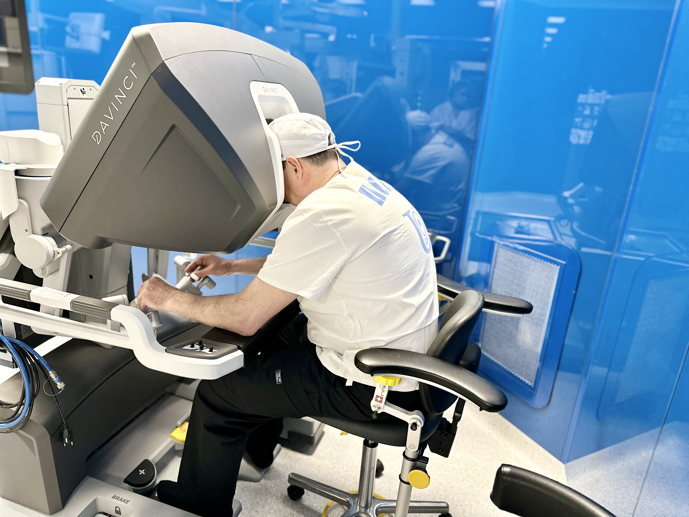
Центр роботической хирургии
Робот-ассистированные операции на установке da Vinci Xi.
Подробнее →Доступность высоких технологий в лечении урологических заболеваний
Ключевые компетенции центра федерального уровня

Робот-ассистированные операции на установке da Vinci Xi.
Подробнее →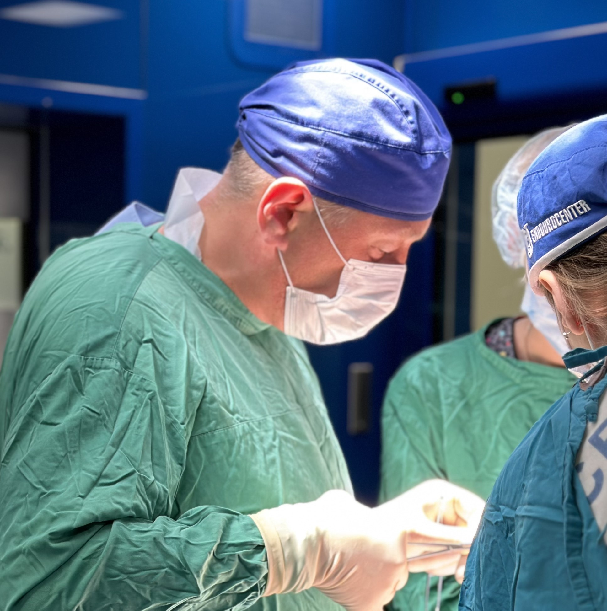
Полный путь пациента: подготовка, диализ, пересадка, наблюдение.
Подробнее →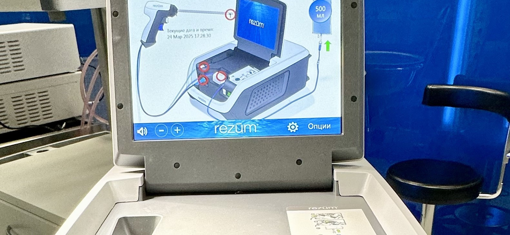
Минимально инвазивное лечение аденомы простаты водяным паром.
Подробнее →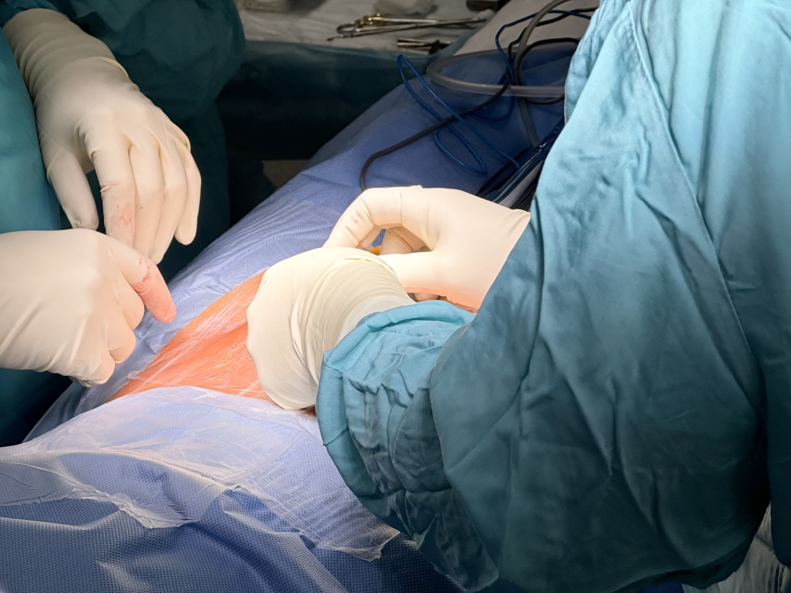
Хирургическое восстановление эректильной функции.
Подробнее →Нажмите на карточку, чтобы узнать о диагностике и методах лечения
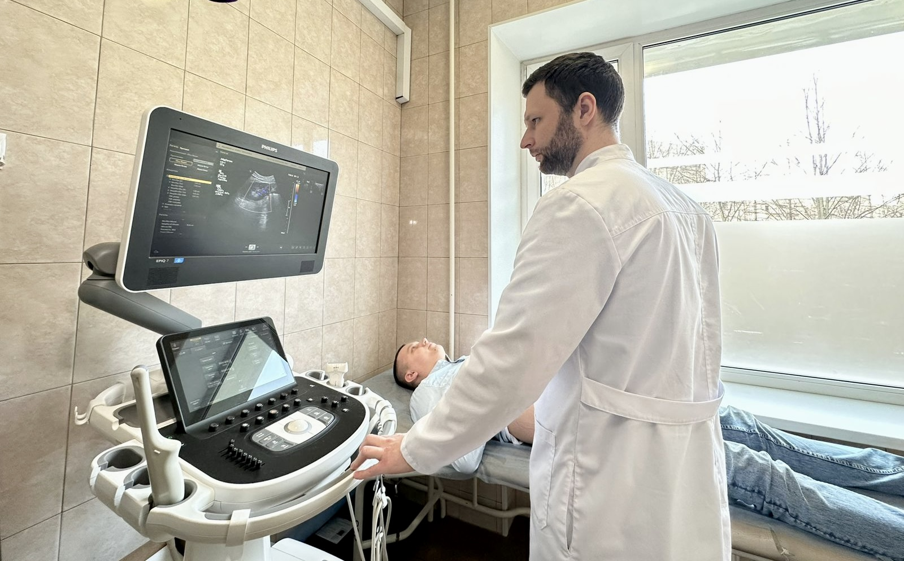
Мужское бесплодие, эректильная дисфункция, гормональные нарушения, варикоцеле.
Подробнее →
Болезнь Пейрони, корпоропластика, реконструктивные и восстановительные операции.
Подробнее →
Метафилактика, эндоскопическое и лапароскопическое удаление камней, дистанционная литотрипсия.
Подробнее →
Роботические, лапароскопические и эндоскопические операции при опухолях мочеполовой системы.
Подробнее →
Диагностика (УЗИ, МРТ с оценкой ПИ-РАДС, фьюжн-биопсия) и все современные методы лечения — от «Rezum» до энуклеации.
Подробнее →
Стриктуры мочеточника и уретры, пластика, восстановление проходимости мочевых путей.
Подробнее →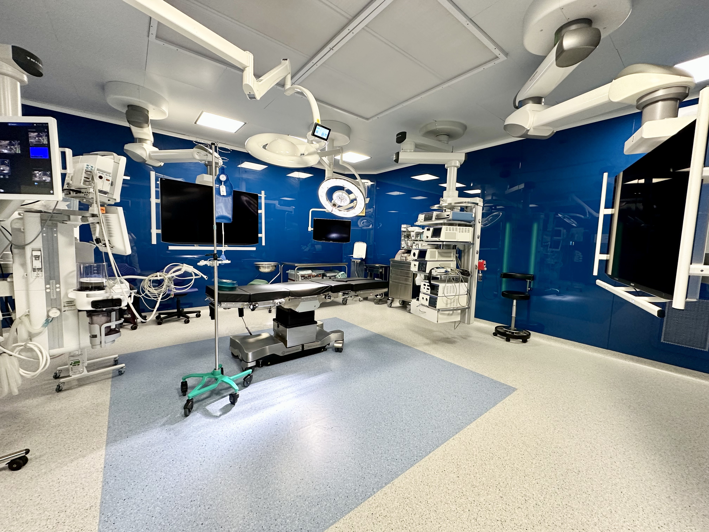
Лечение варикоцеле и заболеваний, влияющих на мужское репродуктивное здоровье.
Подробнее →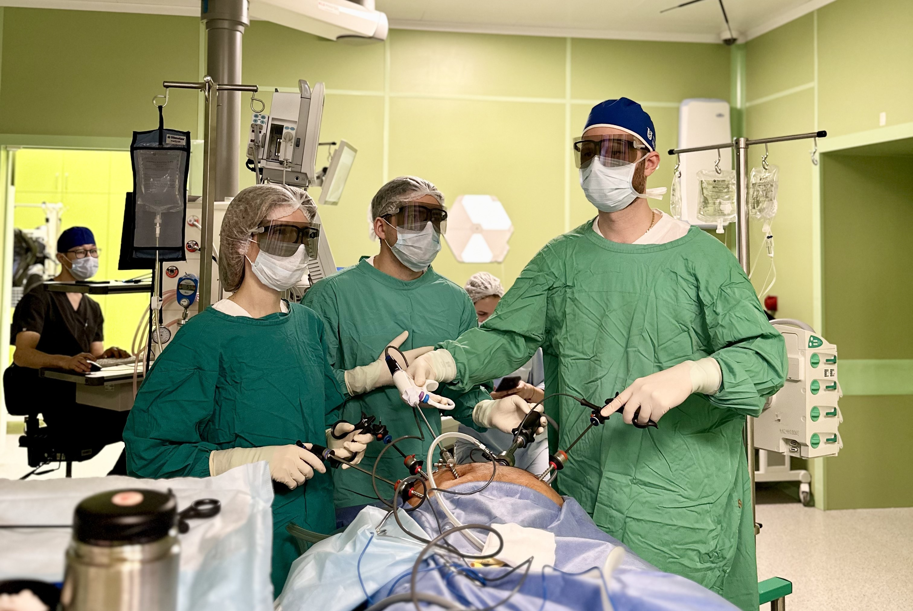
Опущение органов малого таза, недержание мочи, мочеполовые свищи, заболевания уретры.
Подробнее →
Нейроурология, КУДИ, ботулинотерапия, лечение недержания мочи.
Подробнее →Наши специалисты помогут подобрать оптимальное направление лечения
+7 (812) 57-611-57
Урология
Современная диагностика и лечение заболеваний предстательной железы с использованием эндоскопических, лазерных, лапароскопических, роботических и малоинвазивных технологий.

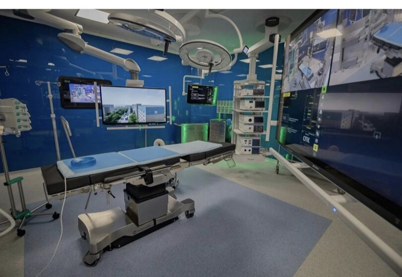
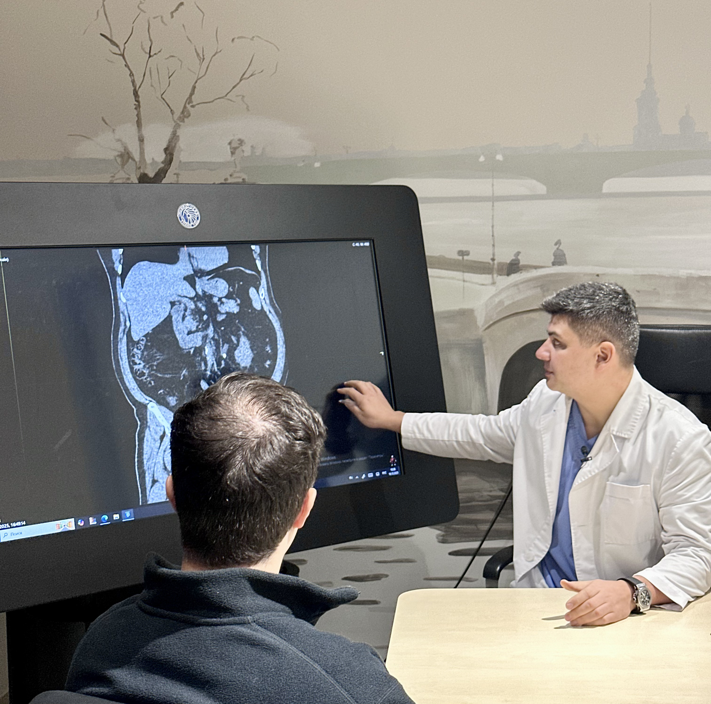
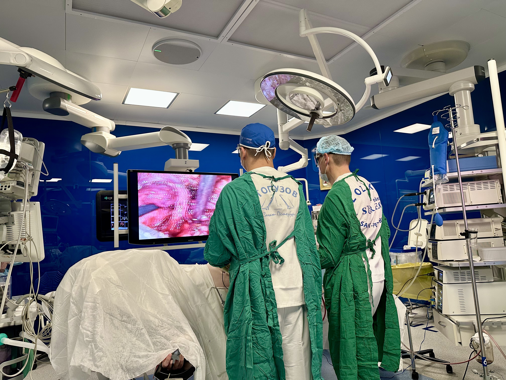
Что это?
Комплекс лабораторных исследований для оценки состояния предстательной железы, мочевыводящих путей и функции почек.
Что может включать?
Что это?
Ультразвуковое исследование позволяет определить размеры и объём предстательной железы, оценить её строение, состояние мочевого пузыря и количество остаточной мочи.
Преимущества
Что это?
Мультипараметрическая МРТ позволяет детально оценить структуру предстательной железы и выявить подозрительные участки.
ПИ-РАДС
Международная система оценки изменений предстательной железы по данным МРТ, которая помогает определить необходимость дальнейшего обследования.
Что это?
Получение небольших фрагментов ткани предстательной железы для гистологического исследования.
фьюжн-биопсия
Данные предварительно выполненной МРТ совмещаются с ультразвуковым изображением во время процедуры, что позволяет выполнить прицельный забор ткани из подозрительного участка.
Промежностная фьюжн-биопсия
В клинике биопсийная игла проводится через небольшие проколы кожи промежности под ультразвуковым контролем и не проходит через прямую кишку.
Преимущества
Операции выполняются через мочеиспускательный канал. Разрезов на коже не требуется.
Что это?
Эндоскопическое удаление избыточной ткани аденомы через мочеиспускательный канал.
Кому подходит?
Преимущественно при небольшом и среднем объёме предстательной железы.
Преимущества
Особенности
После операции временно устанавливается мочевой катетер. Возможно изменение характера эякуляции.
Что это?
Эндоскопическое отделение увеличенной аденоматозной ткани от капсулы предстательной железы с использованием лазерной энергии и её удаление через мочеиспускательный канал.
Кому подходит?
Может применяться при различном объёме предстательной железы, в том числе при крупных аденомах.
Преимущества
Особенности
Операция проводится под анестезией, после вмешательства временно устанавливается катетер. Возможно изменение характера эякуляции.
Что это?
Удаление аденоматозной ткани через несколько небольших проколов передней брюшной стенки.
Кому подходит?
Преимущественно пациентам с крупными и очень крупными аденомами.
Преимущества
Особенности
Требуется анестезия и госпитализация.
Что это?
Операция через небольшие проколы с использованием роботической хирургической системы.
Кому подходит?
Может применяться при крупных и очень крупных аденомах, в том числе в сложных анатомических ситуациях.
Преимущества
Особенности
Требуется анестезия и госпитализация. Метод выбирается индивидуально.
Что это?
Через мочеиспускательный канал выполняется воздействие водяным паром на увеличенную ткань предстательной железы. В дальнейшем обработанная ткань постепенно уменьшается в объёме.
Кому подходит?
Выбор зависит от размера и анатомического строения предстательной железы. Метод может рассматриваться, когда важно минимизировать влияние лечения на эякуляторную функцию.
Преимущества
Особенности
Эффект развивается постепенно. В первое время может потребоваться мочевой катетер.
Что это?
Через небольшой прокол в артерии под рентгенологическим контролем проводится катетер к сосудам, кровоснабжающим предстательную железу. После эмболизации её объём постепенно уменьшается.
Кому подходит?
Метод может рассматриваться при крупном объёме железы, повышенном хирургическом риске и других индивидуальных показаниях.
Преимущества
Особенности
Эффект развивается постепенно; в отдельных случаях в дальнейшем может потребоваться дополнительное лечение.
Не существует одной технологии, которая подходит каждому пациенту. Выбор проводится индивидуально с учётом:
Наша задача — подобрать метод лечения, наиболее подходящий конкретному пациенту.
Оптимальный вариант лечения врач определит после консультации и оценки результатов обследования.
Урология
Современное лечение камней почек, мочеточников и мочевого пузыря — от профилактики повторного камнеобразования до эндоскопических, лапароскопических и дистанционных технологий.
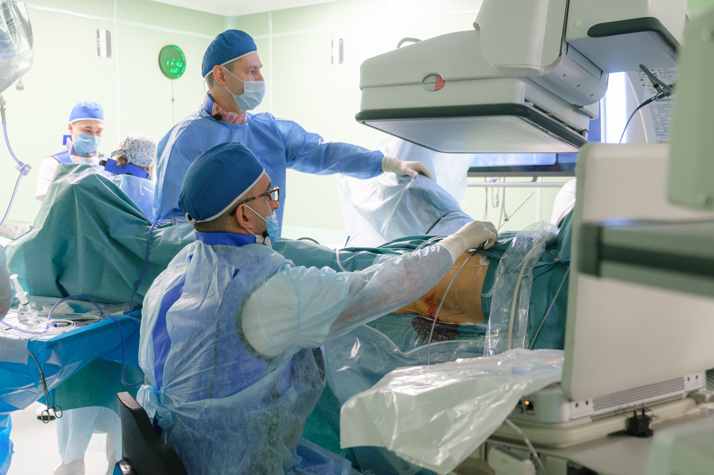
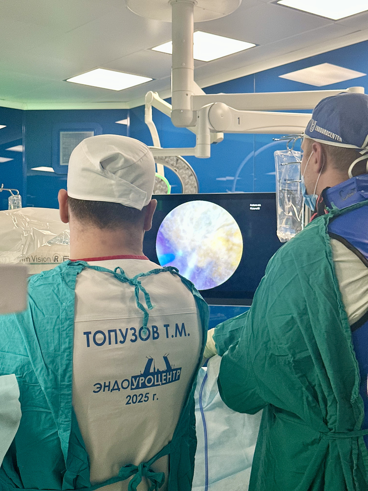
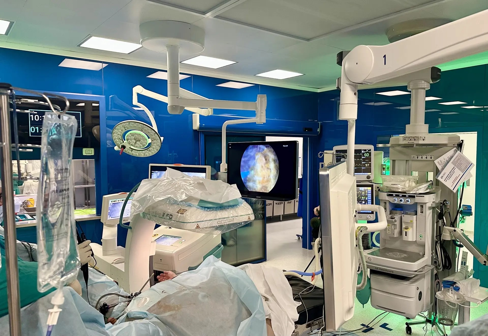
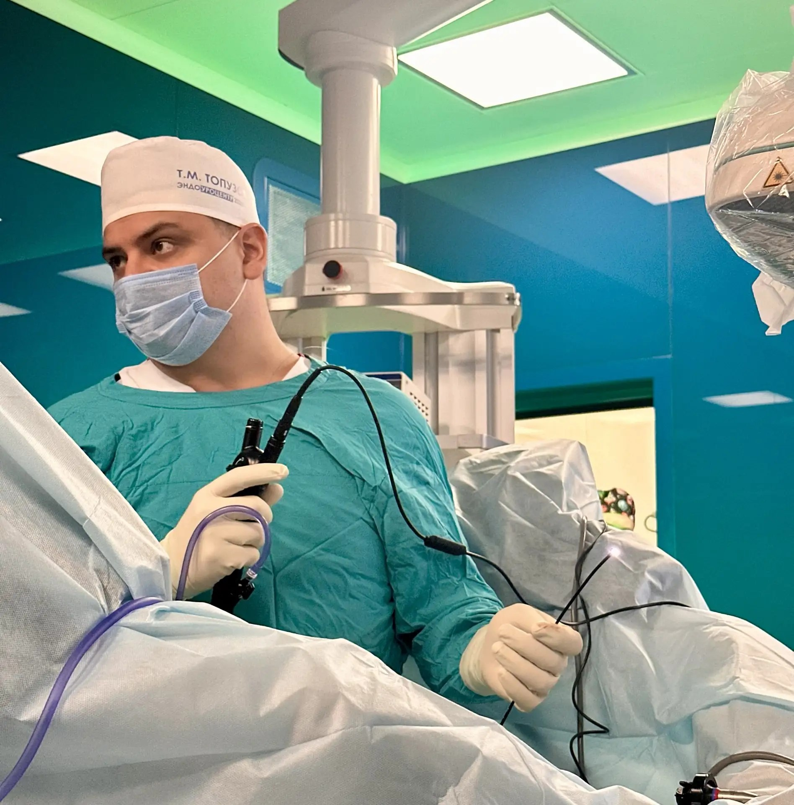
Что это?
Метафилактика — комплекс мероприятий, направленных на снижение риска образования новых камней после их самостоятельного отхождения или удаления.
Что может включать?
Что это?
Эндоскоп проводится через естественные мочевые пути к камню мочеточника. Камень дробится лазером, а его фрагменты удаляются.
Преимущества
Особенности
После операции в некоторых случаях временно устанавливается мочеточниковый стент.
Что это?
Гибкий эндоскоп проводится через мочеиспускательный канал и мочеточник в чашечно-лоханочную систему почки. Камни дробятся лазером под визуальным контролем.
Преимущества
Особенности
Выбор метода зависит от размера, количества и расположения камней. Иногда требуется этапное лечение.
Что это?
Через небольшой пункционный доступ в поясничной области формируется канал непосредственно в почку. Через него вводится эндоскоп, камень дробится и удаляется.
Кому подходит?
Преимущественно при крупных, множественных и коралловидных камнях почки.
Преимущества
Что это?
Вариант перкутанного лечения с использованием инструментов уменьшенного диаметра и небольшого пункционного доступа к почке.
Преимущества
Особенности
Выбор между стандартной и мини-перкутанной операцией зависит от размера, количества и расположения камней.
Что это?
Эндоскоп вводится в мочевой пузырь через мочеиспускательный канал. Камень дробится под визуальным контролем, а фрагменты удаляются.
Особенности
Важно также определить и при необходимости устранить причину образования камня в мочевом пузыре.
Что это?
Удаление камня из почечной лоханки через несколько небольших проколов.
Когда применяется?
В отдельных случаях при крупных камнях, особенностях анатомии или когда эндоскопические методы технически затруднены либо недостаточно эффективны.
Что это?
Удаление камня из мочеточника лапароскопическим доступом через несколько небольших проколов.
Когда применяется?
В отдельных сложных ситуациях, когда стандартные эндоскопические методы не подходят или были неэффективны.
Что это?
Дистанционная ударно-волновая литотрипсия — метод дробления камней с помощью ударных волн, которые формируются вне тела пациента и фокусируются на камне. После дробления фрагменты должны самостоятельно выйти по мочевым путям.
Кому подходит?
Метод может применяться при определённых камнях почки и мочеточника. Возможность проведения зависит от размера, расположения и плотности камня, анатомии мочевых путей и других факторов.
Преимущества
Особенности
Не каждый камень хорошо поддаётся дистанционному дроблению. Иногда требуется несколько сеансов или последующее эндоскопическое лечение.
Что это?
Через естественные мочевые пути устанавливается тонкий внутренний стент от почки до мочевого пузыря, который обеспечивает отток мочи в обход препятствия.
Для чего?
Особенности
Стент является временным и после устранения причины обструкции должен быть удалён или заменён.
Что это?
Через небольшой прокол в поясничной области в чашечно-лоханочную систему почки устанавливается дренаж, по которому моча отводится наружу.
Когда применяется?
При выраженном нарушении оттока мочи, инфекции на фоне обструкции, невозможности или нецелесообразности установки мочеточникового стента и в других экстренных ситуациях.
Преимущества
Тактика определяется индивидуально и зависит от:
Наша задача — выбрать эффективный и безопасный способ освобождения мочевых путей от камней и снизить риск их повторного образования.
Оптимальный метод лечения врач определит после консультации и оценки результатов обследования, в том числе компьютерной томографии.
Урология
Диагностика и хирургическое лечение опухолей органов мочеполовой системы с применением роботических, лапароскопических, эндоскопических и внутрипузырных технологий.
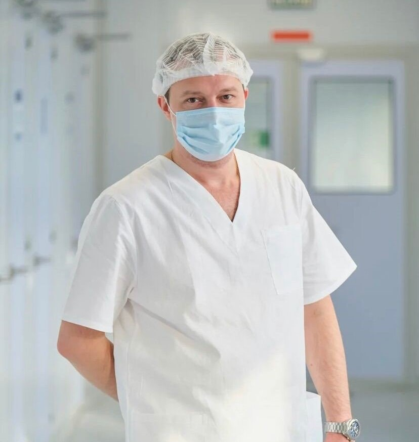
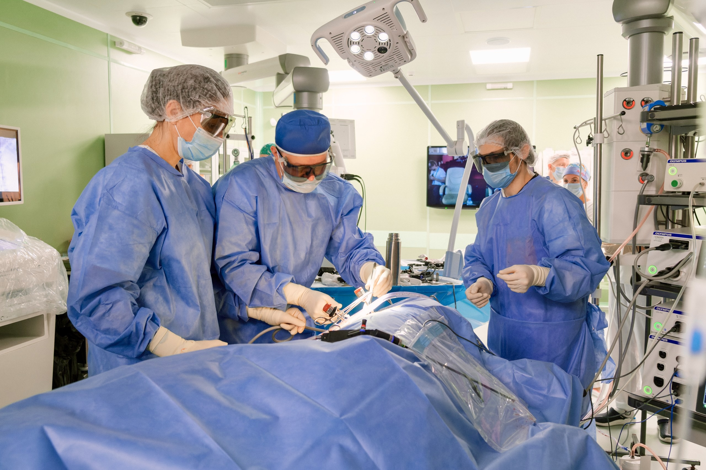
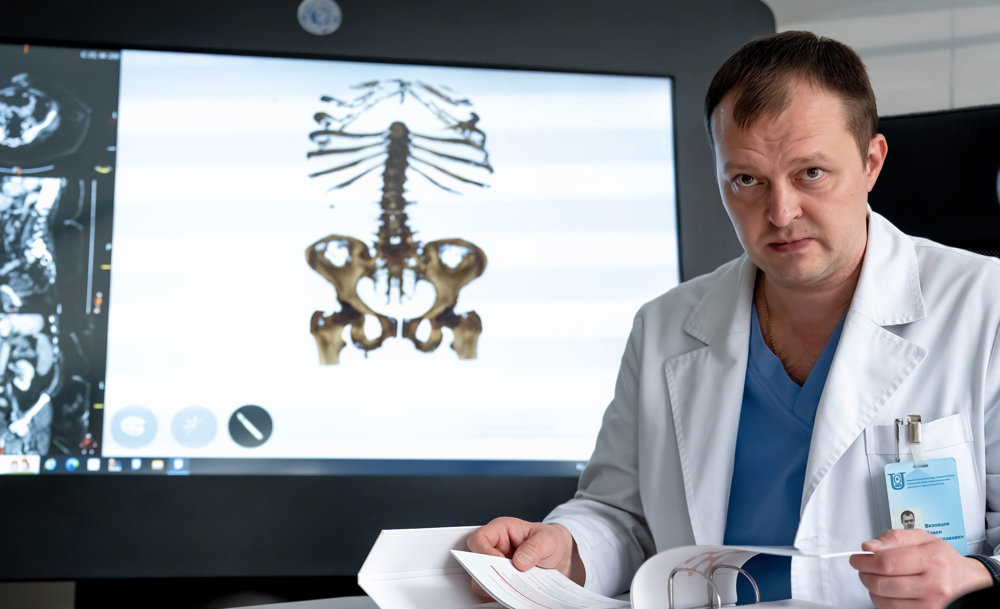
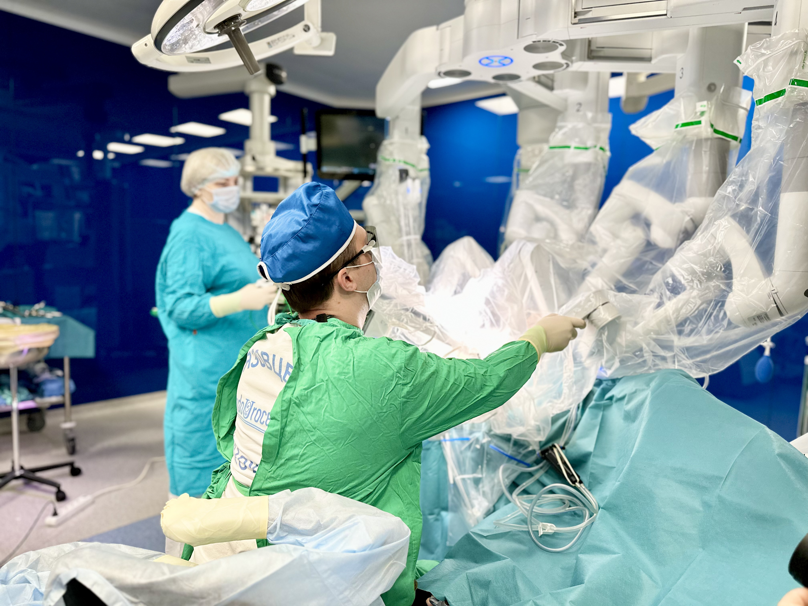
Что это?
Удаление предстательной железы с опухолью с использованием роботической хирургической системы.
Преимущества
Особенности
Объём операции определяется стадией заболевания, данными МРТ, уровнем ПСА, результатами биопсии и другими клиническими факторами.
Что это?
Удаление опухоли с сохранением максимально возможного объёма здоровой ткани почки.
Преимущества
Особенности
Возможность органосохраняющей операции зависит от размера, расположения и распространённости опухоли, а также функции почек.
Что это?
Удаление почки вместе с опухолью, когда органосохраняющая операция невозможна или нецелесообразна.
Особенности
Выбор между резекцией почки и нефрэктомией определяется индивидуально после оценки данных КТ или МРТ и функции почек.
Какие операции возможны?
Главная задача
Радикальное удаление опухоли и, когда это онкологически безопасно, максимально возможное сохранение функции мочевой системы.
Что это?
Удаление предстательной железы с опухолью лапароскопическим доступом через небольшие проколы.
Преимущества
Что это?
Удаление опухоли с сохранением почки, когда это технически и онкологически возможно.
Преимущества
Что это?
Удаление почки вместе с опухолью при наличии соответствующих онкологических показаний.
Особенности
Объём операции определяется размером, локализацией и распространённостью опухоли, а также функцией второй почки.
Что это?
Удаление мочевого пузыря при мышечно-инвазивном или другом высокорисковом раке мочевого пузыря, когда показано радикальное хирургическое лечение.
Операция может включать
Особенности
Способ отведения мочи определяется индивидуально.
Возможные операции
Особенности
Выбор операции зависит от локализации, размера, морфологических характеристик и распространённости опухоли.
Что это?
Трансуретральная резекция опухоли мочевого пузыря — эндоскопическая операция, при которой опухоль удаляется через мочеиспускательный канал без наружных разрезов.
Для чего проводится?
Особенности
После операции временно может устанавливаться мочевой катетер. В отдельных случаях может потребоваться повторная ТУР или дополнительное лечение.
Что это?
Метод внутрипузырной иммунотерапии, применяемый при определённых формах немышечно-инвазивного рака мочевого пузыря. Препарат вводится непосредственно в мочевой пузырь через тонкий катетер.
Когда применяется?
После ТУР опухоли мочевого пузыря при наличии соответствующих онкологических показаний, в том числе при немышечно-инвазивном раке высокого риска и карциноме «на месте».
Задачи лечения
Особенности
Схема и продолжительность лечения определяются индивидуально. Во время курса необходим регулярный контроль уролога-онколога.
Что это?
Тонкий эндоскоп проводится через естественные мочевые пути непосредственно к опухоли. Под визуальным контролем может выполняться биопсия и удаление или разрушение опухолевой ткани.
Кому подходит?
Метод применяется у тщательно отобранных пациентов с учётом локализации и размера опухоли, результатов биопсии, степени злокачественности, функции почек и возможности регулярного последующего наблюдения.
Преимущества
Тактика определяется индивидуально с учётом:
Основная задача — обеспечить онкологическую эффективность лечения и одновременно максимально сохранить функцию органов, когда это возможно и безопасно.
Тактика лечения определяется после изучения результатов обследования и консультации специалиста.
Урология
Диагностика и хирургическое лечение заболеваний мочеполовой системы у женщин: опущения органов малого таза, недержания мочи, мочеполовых свищей и заболеваний женской уретры.


Что это?
Малоинвазивные операции через небольшие проколы, направленные на восстановление нормального положения органов малого таза и фиксацию опущенных структур.
Кому подходит?
Пациенткам с различными формами пролапса тазовых органов после комплексной оценки анатомии и жалоб.
Преимущества
Особенности и ограничения
Конкретный вариант фиксации и необходимость применения сетчатого импланта определяются индивидуально.
Что это?
Влагалищная реконструктивная операция, при которой ткани фиксируются к крестцово-остистой связке для восстановления поддержки верхних отделов влагалища.
Преимущества
Особенности и ограничения
Метод выбирается с учётом типа пролапса, ранее выполненных операций и индивидуальной анатомии.
Что это?
Реконструктивная операция, при которой поддержка стенок влагалища восстанавливается за счёт собственных тканей пациентки.
Преимущества
Особенности и ограничения
Объём операции зависит от вида и степени опущения органов малого таза.
Что это?
Реконструктивная операция, применяемая у отдельных пациенток при определённых формах пролапса и удлинении шейки матки.
Особенности
Показания определяются индивидуально после осмотра и оценки состояния органов малого таза.
Что это?
Малоинвазивные операции для лечения стрессового недержания мочи, при которых под средней частью мочеиспускательного канала устанавливается поддерживающий слинг.
Кому подходит?
Пациенткам со стрессовым недержанием мочи после подтверждения типа нарушения и оценки функции нижних мочевых путей.
Преимущества
Особенности и ограничения
Выбор трансобтураторного или позадилонного доступа определяется индивидуально.
Что это?
Реконструктивные вмешательства, выполняемые при отдельных осложнениях ранее установленного слинга или другого сетчатого импланта.
Что может выполняться?
Особенности
Объём операции зависит от характера осложнения, расположения импланта и результатов обследования.
Какие свищи лечим?
Главная задача лечения
Закрыть патологическое сообщение, восстановить герметичность и нормальную функцию мочевых путей.
Что это?
Реконструктивная операция через влагалище без разрезов на передней брюшной стенке.
Когда применяется?
В зависимости от расположения, размера свища и состояния окружающих тканей.
Что это?
Реконструктивная операция через несколько небольших проколов передней брюшной стенки.
Преимущества
Что это?
Реконструктивная операция через небольшие проколы с использованием роботической хирургической системы.
Преимущества
Что это?
Доброкачественные образования области наружного отверстия и дистальных отделов мочеиспускательного канала.
Лечение
При наличии показаний выполняется хирургическое удаление с последующим гистологическим исследованием материала.
Что это?
Патологические полости и выпячивания, связанные со стенкой мочеиспускательного канала.
Лечение
Тактика определяется после обследования. При наличии показаний выполняется хирургическое удаление образования и реконструкция уретры.
Что это?
Хирургическое изменение положения наружного отверстия мочеиспускательного канала.
Кому подходит?
Операция выполняется у тщательно отобранных пациенток при наличии соответствующих показаний после комплексного обследования.
Особенности
Необходимость вмешательства определяется индивидуально после исключения других причин жалоб.
Тактика определяется индивидуально и зависит от:
Задача лечения — восстановить анатомию и функцию органов малого таза, выбрав подходящий для конкретной пациентки метод.
Тактика лечения определяется после консультации, осмотра и оценки результатов обследования.
Урология
Диагностика и лечение заболеваний мужской репродуктивной и половой системы.

Что оцениваем?
Проводится комплексная оценка репродуктивного здоровья мужчины с учётом анамнеза, результатов спермограммы, гормонального профиля и других исследований по показаниям.
Что может включать?
Что это?
Стойкое нарушение способности достигать или поддерживать эрекцию, достаточную для половой жизни.
Как проводится обследование?
Тактика определяется индивидуально и может включать лабораторную диагностику, оценку сосудистых и гормональных факторов, сопутствующих заболеваний и принимаемых препаратов.
Лечение
В зависимости от причины применяются консервативные методы. При тяжёлой эректильной дисфункции и неэффективности других методов может рассматриваться фаллопротезирование.
Что оцениваем?
При соответствующих жалобах проводится оценка уровня тестостерона и других гормональных показателей с учётом возраста, симптомов, репродуктивных планов и сопутствующих заболеваний.
Задача
Определить причину гормональных нарушений и подобрать индивидуальную тактику наблюдения или лечения.
Что это?
Варикоцеле — расширение вен семенного канатика. Оно может сопровождаться дискомфортом, изменением показателей спермограммы и снижением репродуктивной функции.
Лечение
При наличии показаний может выполняться микрохирургическая варикоцелэктомия по Мармару или эндоваскулярное лечение.
Как выбирается метод?
Решение принимается с учётом жалоб, данных осмотра, УЗИ, спермограммы и репродуктивных планов пациента.
Что входит в раздел?
Лечение
Тактика зависит от диагноза, выраженности симптомов и данных обследования. При наличии показаний выполняется хирургическое лечение.
Что оцениваем?
Учитываются характер жалоб, длительность симптомов, сопутствующие заболевания, лекарственная терапия и другие факторы.
Лечение
Метод подбирается индивидуально. В зависимости от причины могут применяться консервативные и, при отдельных показаниях, хирургические подходы.
Объём обследования зависит от основной проблемы пациента. Врач формирует индивидуальный план диагностики и лечения с учётом репродуктивной и сексуальной функции.
Вы можете обратиться на консультацию для диагностики мужского бесплодия, эректильной дисфункции, гормональных нарушений и других андрологических заболеваний.
Урология
Реконструктивные, восстановительные и протезирующие операции на мужских половых органах.
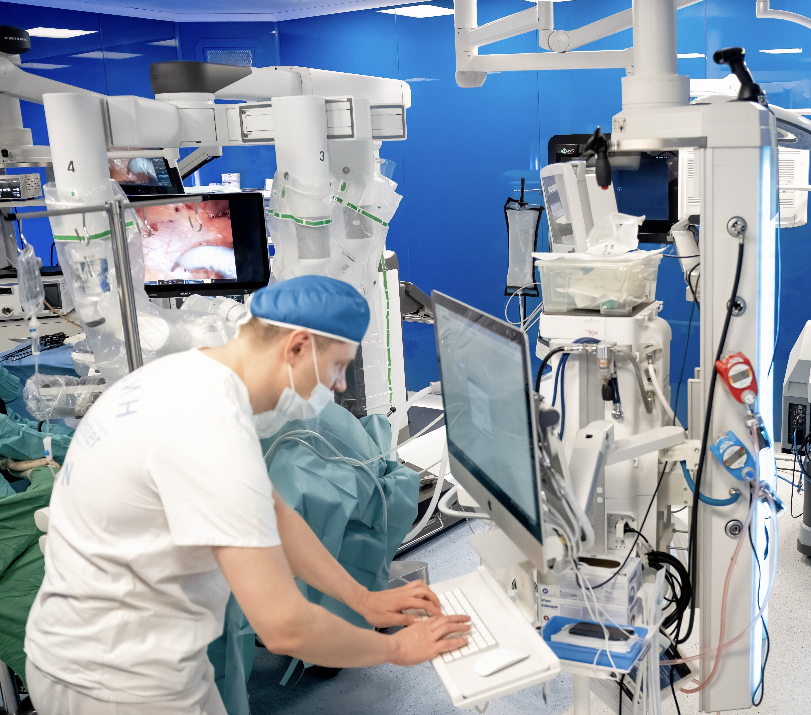
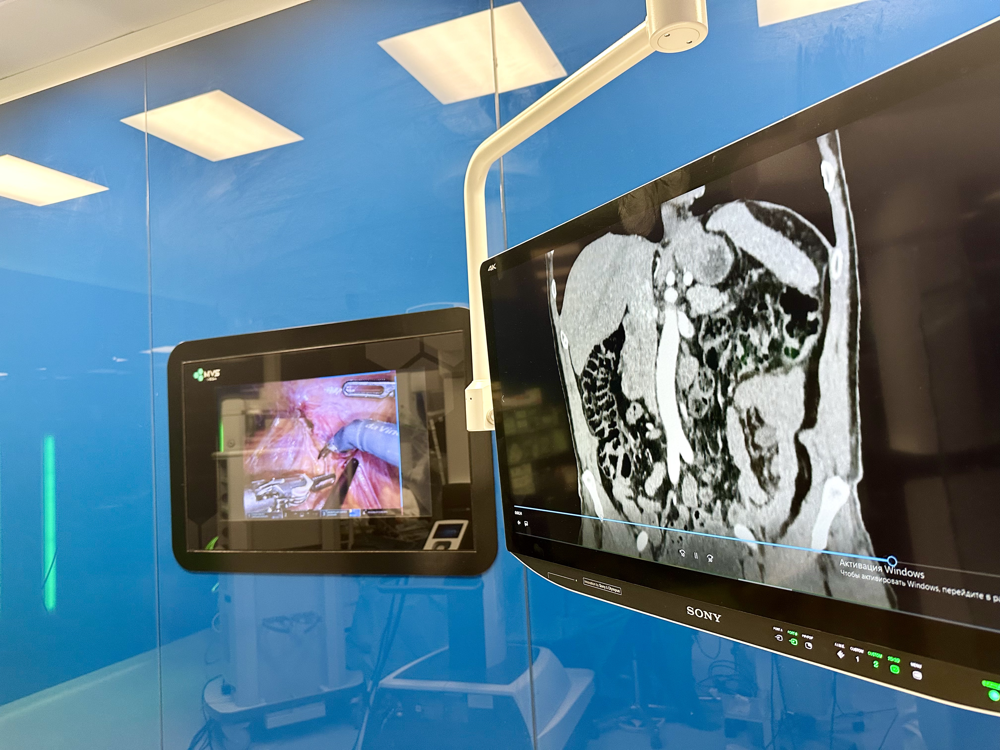
Что это?
Болезнь Пейрони и другие деформации полового члена могут приводить к искривлению, боли и затруднению половой жизни.
Когда рассматривается операция?
При выраженной стабильной деформации, которая мешает половой жизни, а также в других клинических ситуациях по результатам обследования.
Что это?
Группа операций, направленных на хирургическое выпрямление полового члена и восстановление его формы.
Варианты
Особенности
Конкретная методика выбирается с учётом степени искривления, длины полового члена, состояния эректильной функции и характера деформации.
Что может выполняться?
Основная задача
Максимально восстановить анатомию и функцию полового члена с учётом характера повреждения и состояния тканей.
Когда применяются?
При значительных дефектах тканей, последствиях тяжёлых травм или ранее выполненных операций.
Что может включать?
Особенности
Такие вмешательства требуют индивидуального планирования и могут выполняться в несколько этапов.
Что это?
Имплантация протеза полового члена для восстановления возможности полноценной половой жизни при тяжёлой эректильной дисфункции.
Кому подходит?
Пациентам, у которых другие методы лечения не обеспечивают достаточного результата или не могут быть применены.
Виды протезов
Преимущества
Особенности
Выбор типа протеза и возможность операции определяются после консультации и обследования.
Что это?
Установка импланта яичка для восстановления внешнего вида мошонки после утраты или удаления яичка.
Что это?
Хирургические вмешательства применяются в отдельных случаях длительной патологической эрекции, когда требуется восстановление нормального кровообращения.
Что может выполняться?
Тактика определяется индивидуально с учётом диагноза, выраженности деформации, состояния тканей, эректильной функции, перенесённых операций и целей пациента.
Основная задача — восстановить анатомию и функцию мужских половых органов с выбором подходящей хирургической технологии.
Перед хирургическим лечением необходимы консультация, оценка медицинской документации и индивидуальное планирование операции.
Приоритетное направление
В Клинической больнице Святителя Луки с 2022 года выполняются операции по трансплантации почки. Пациенту доступно комплексное сопровождение: обследование и подготовка, диализ при необходимости, хирургическое лечение и дальнейшее динамическое наблюдение.
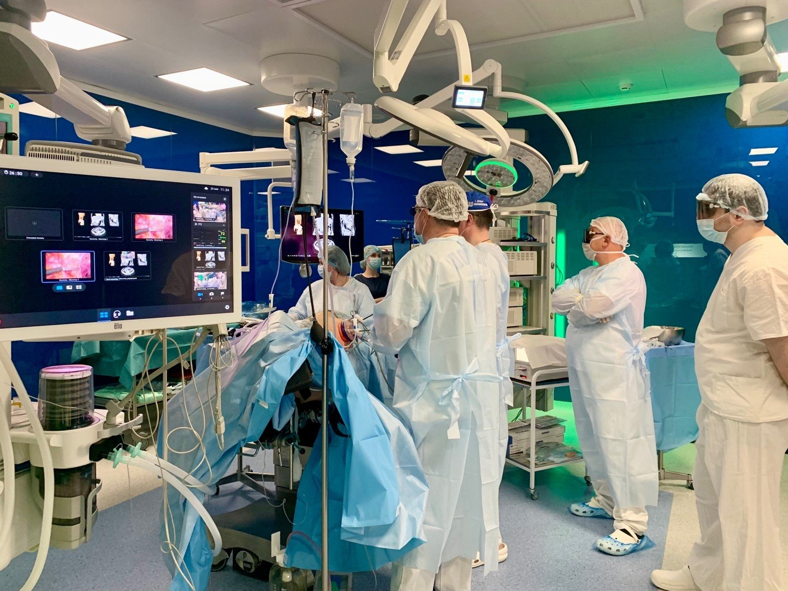
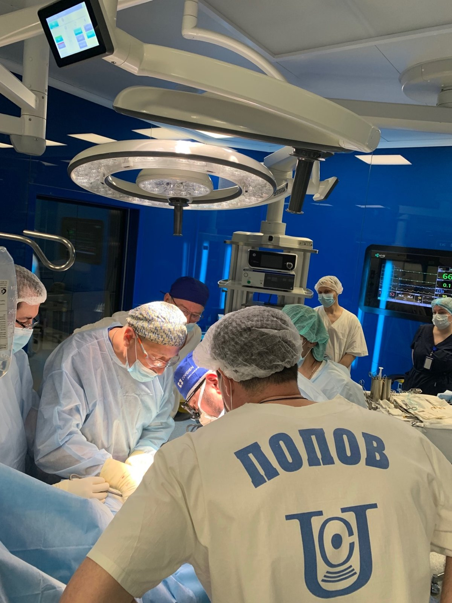
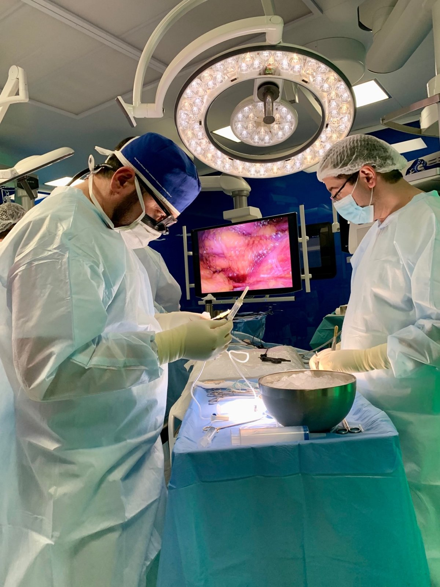
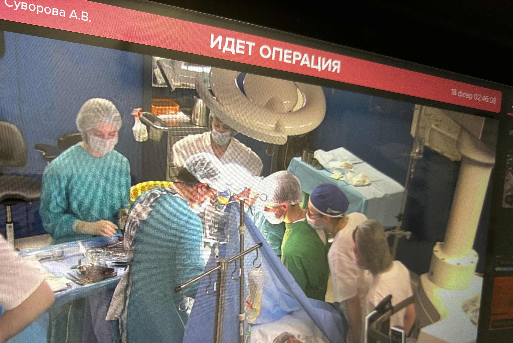
С 2022 года в СПб ГБУЗ Клиническая больница Святителя Луки под руководством главного врача С.В. Попова, доктора медицинских наук, профессора, Заслуженного врача Российской Федерации, выполняются оперативные вмешательства по трансплантации почки.
Многопрофильный стационар специализируется на урологической и онкоурологической помощи и располагает диагностическими, хирургическими, нефрологическими и реанимационными возможностями для ведения пациентов с терминальной стадией хронической болезни почек.
Основной принцип: сопровождение пациента на всех этапах — от обследования и подготовки до операции, послеоперационного периода и дальнейшего наблюдения.выполняется трансплантация почки
урологических операций ежегодно
возможность организовать комплексное обследование в короткие сроки
круглосуточное наблюдение и хирургическая готовность стационара
da Vinci Xi
Операционный блок оснащён робот-ассистированной хирургической системой da Vinci Xi.
МСКТ
Рентгенологическое отделение оснащено мультиспиральным компьютерным томографом «Аквилион Прайм» («Тошиба», Япония) на 160 срезов и роботизированной системой для проведения биопсий.
МРТ 3 Тесла
С февраля 2022 года в больнице работает сверхвысокопольная МРТ-система 3 Тесла.
Ангиографическая служба
Пациентам доступны возможности ангиографической диагностики и вмешательств.
Нефрология
Круглосуточное наблюдение специалистов-нефрологов на этапах обследования и лечения.
Диализ
Современный кабинет гемодиализа для заместительной почечной терапии при необходимости.
Обследование Комплексная диагностика и оценка готовности к трансплантации.
Диализ Заместительная почечная терапия при наличии показаний.
Трансплантация Хирургическое вмешательство и ранний послеоперационный период.
Наблюдение Контроль функции трансплантата и длительное сопровождение.
Что включает подготовка?
Клинико-диагностические и лабораторные возможности учреждения позволяют провести необходимую диагностику как при планировании операции, так и при последующем динамическом наблюдении.
Что такое гемодиализ?
Гемодиализ — метод заместительной почечной терапии, при котором кровь очищается от продуктов обмена и избытка жидкости с помощью специального аппарата при выраженном снижении функции почек.
Возможности кабинета
Кабинет входит в состав нефрологического отделения и оснащён аппаратами «Фрезениус» 4008S и 5008S.
Что это?
Трансплантация почки — хирургическая операция, при которой пациенту пересаживается донорская почка. Во время вмешательства формируется кровоснабжение трансплантата и создаётся путь оттока мочи в мочевой пузырь.
Цель лечения
Для подходящих пациентов трансплантация позволяет восстановить функцию почек, уменьшить или устранить зависимость от диализа и способствует медицинской и социальной реабилитации.
После операции
Требуются регулярное наблюдение, контроль функции трансплантированной почки и приём назначенной иммуносупрессивной терапии.
Какие ситуации могут потребовать урологического лечения?
В зависимости от ситуации применяются эндоскопические, пункционные и реконструктивные вмешательства. Основная задача — сохранить функцию трансплантированной почки и восстановить нормальный отток мочи.
Боксированные палаты
Для пациентов предусмотрены боксированные палаты с автономной системой вентиляции, что помогает снизить риск инфекционных осложнений в послеоперационном периоде.
Круглосуточное наблюдение
Пациент находится под наблюдением специалистов, включая нефрологов, с возможностью лабораторного, инструментального и хирургического контроля.
Тактика определяется индивидуально с учётом причины хронической болезни почек, функции собственных почек, необходимости диализа, общего состояния и сопутствующих заболеваний, иммунологической совместимости, состояния мочевых путей и результатов обследования.
Трансплантация почки — это не только операция, а комплексный процесс: подготовка, при необходимости диализ, хирургическое лечение и длительное последующее наблюдение.
Оптимальный вариант лечения врач определит после консультации и оценки результатов обследования.
Андрологическая хирургия
Хирургический метод восстановления эректильной функции при тяжёлой эректильной дисфункции, болезни Пейрони и других состояниях, когда консервативное лечение не обеспечивает необходимого результата.
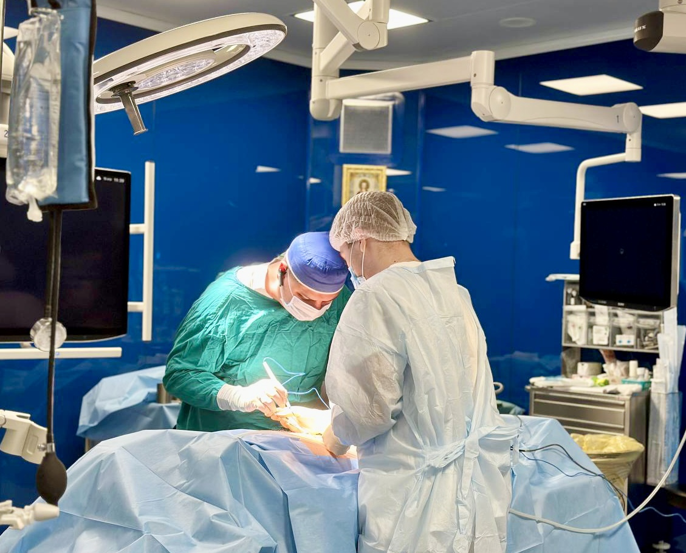
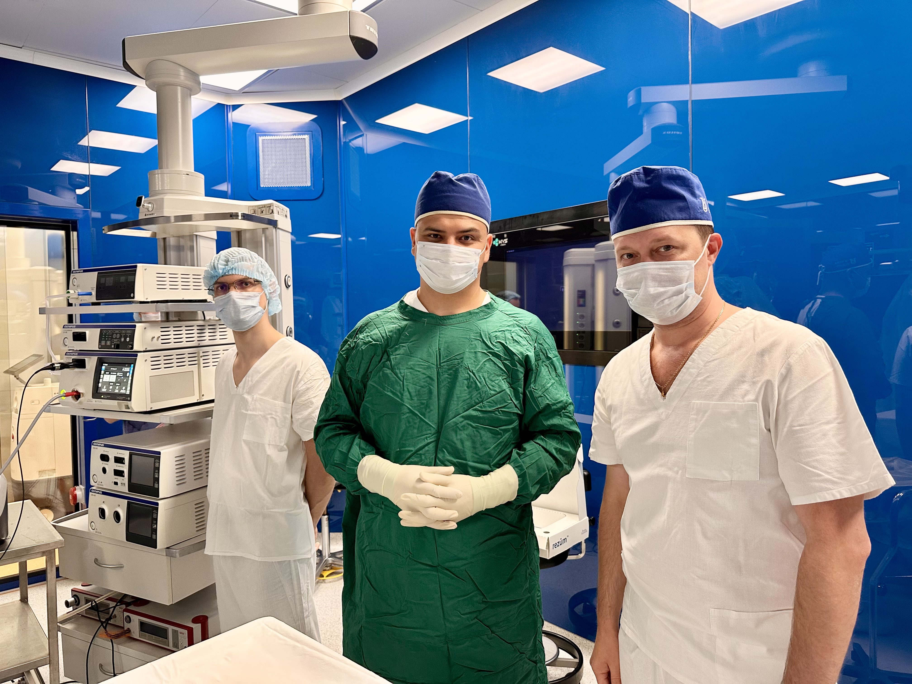
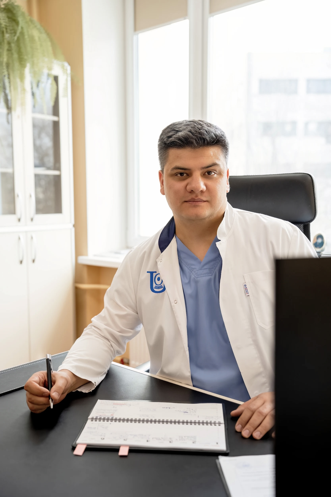
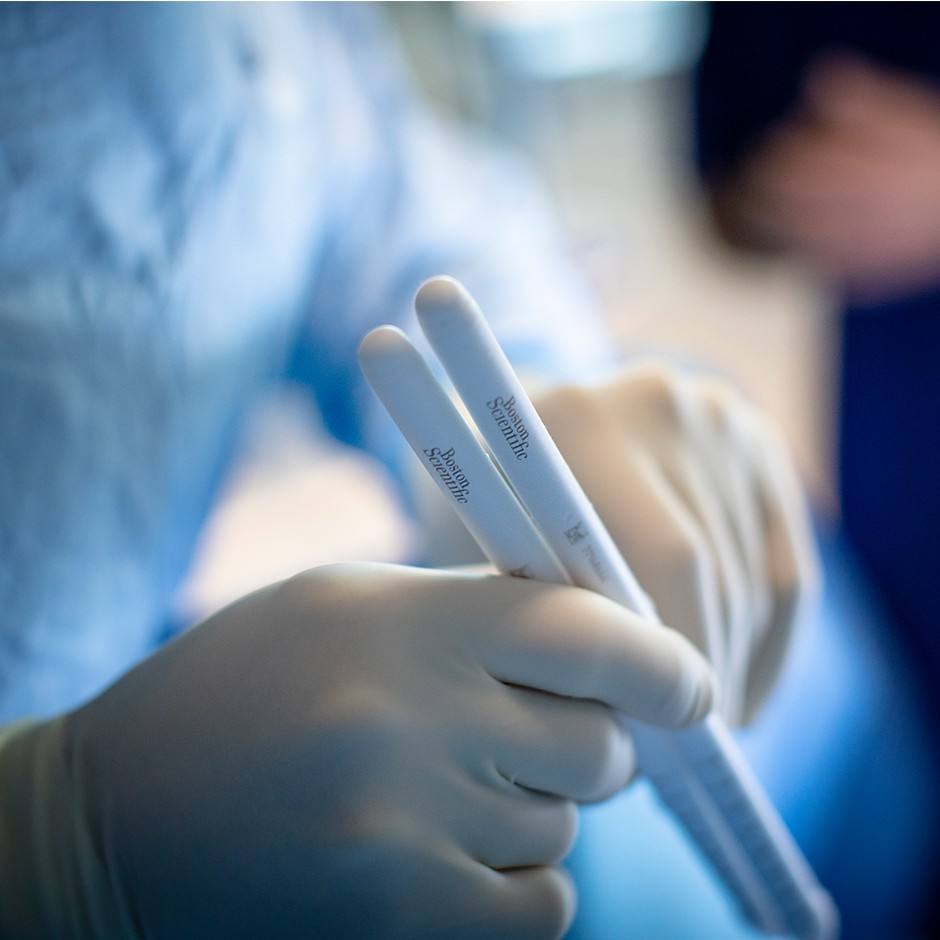
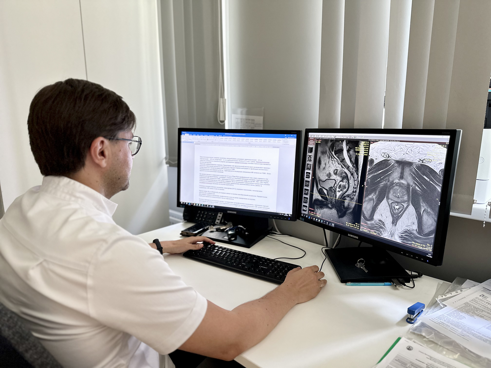
Фаллопротезирование — операция, при которой в кавернозные тела полового члена устанавливаются специальные импланты, позволяющие механически создавать необходимую ригидность для половой жизни.
Основные варианты — полужёсткие (однокомпонентные) и трёхкомпонентные гидравлические протезы. Они отличаются устройством, способом управления и ощущением в повседневной жизни.
Полужёсткий фаллопротез
Состоит из двух пластичных стержней, устанавливаемых в кавернозные тела. Половой член сохраняет постоянную внутреннюю жёсткость, а его положение изменяется вручную.
Преимущества
Особенности
В повседневной жизни результат менее физиологичен, чем при использовании гидравлической системы.
Трёхкомпонентный гидравлический протез
Система включает два цилиндра, помпу и резервуар. При активации помпы жидкость поступает в цилиндры и создаёт эрекцию; после деактивации система возвращается в расслабленное состояние.
Преимущества
Особенности
Конструкция технически сложнее и требует освоения управления помпой.
Оценка причины эректильной дисфункции, предыдущего лечения и анатомических особенностей.
Выбор подходящей конструкции с учётом медицинских показаний и ожиданий пациента.
Консультация анестезиолога и выбор оптимального вида анестезиологического пособия.
Имплантация протеза в условиях профильного урологического стационара.
Послеоперационное наблюдение, обезболивание и контроль состояния.
Контроль заживления и послеоперационное сопровождение.
При гидравлической системе пациенту объясняют порядок использования протеза.
Плановые осмотры и возвращение к половой жизни после разрешения врача.
Проводится в профильном хирургическом стационаре.
Предоперационная консультация и индивидуальный подбор анестезии.
Наблюдение в профильном отделении после вмешательства.
Перевязки, контрольные осмотры и послеоперационные рекомендации.
Оригинальный медицинский имплант; гарантийные условия зависят от производителя и модели.
Договор на оказание медицинских услуг и документы, предусмотренные правилами учреждения.
Компоненты импланта располагаются внутри организма. Внешний вид зависит от типа системы, анатомии и индивидуальных особенностей пациента.
Сам протез предназначен для восстановления ригидности. Чувствительность и способность к оргазму во многом зависят от исходного состояния пациента, перенесённых операций и сопутствующих заболеваний.
После завершения заживления и разрешения оперирующего врача. Конкретные сроки определяются индивидуально.
Выбор определяется медицинскими показаниями, анатомическими особенностями, состоянием кистей и возможностью управлять помпой, опытом предыдущих операций и предпочтениями пациента.
Фаллопротезирование требует индивидуального выбора типа импланта и оценки показаний к операции.
Урология
Восстановление анатомии и функции мочевых путей при стриктурах, травмах, последствиях операций и других сложных урологических состояниях.
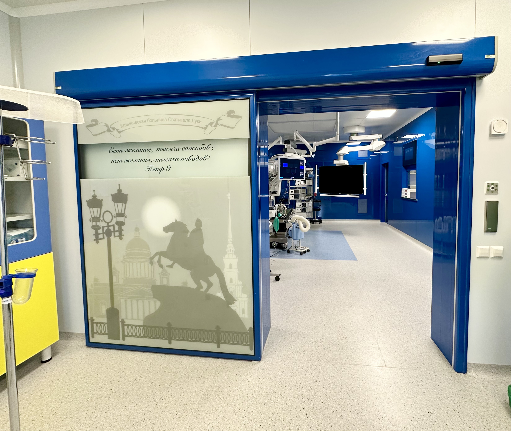

Что включает?
Что это?
Уретроскопия и цистоскопия позволяют оценить локализацию и характер сужения, состояние слизистой и мочевого пузыря.
Когда применяется?
По показаниям — при стриктурах уретры, нарушении мочеиспускания, подозрении на рубцовые изменения и после ранее выполненных операций.
Что это?
Контрастные исследования помогают определить протяжённость и локализацию стриктуры, оценить заднюю уретру и выбрать способ реконструкции.
Что это?
КТ или МРТ применяются по индивидуальным показаниям при сложных реконструктивных задачах, свищах, повреждениях мочеточника, мочевого пузыря и после ранее перенесённых операций.
Что это?
Внутреннее рассечение или расширение рубцово-суженного участка уретры эндоскопическим способом.
Кому подходит?
Метод может применяться при отдельных коротких стриктурах и выбирается индивидуально.
Особенности
При протяжённых, рецидивных или сложных стриктурах может потребоваться открытая реконструктивная операция.
Что это?
Удаление рубцово изменённого участка уретры с восстановлением её непрерывности путём соединения здоровых концов.
Кому подходит?
Чаще применяется при ограниченных стриктурах, когда возможно выполнить реконструкцию без натяжения тканей.
Что это?
Реконструкция с применением трансплантата слизистой оболочки щеки для расширения или замещения суженного участка уретры.
Преимущества
Когда требуется?
При стриктурах, травмах, послеоперационных повреждениях и других состояниях, нарушающих отток мочи из почки.
Возможные методы
Когда применяется?
После травм, операций, при рубцовых деформациях и других сложных состояниях, требующих восстановления целостности или функционального объёма мочевого пузыря.
Особенности
Объём вмешательства определяется индивидуально с учётом функции почек, состояния мочевых путей и ранее выполненных операций.
Что это?
Свищ — патологическое сообщение между органами мочевой системы и соседними структурами или кожей.
В клинике рассматриваются
Лечение
Тактика зависит от локализации, размера, причин образования свища и состояния тканей. Возможны открытые, лапароскопические и робот-ассистированные реконструктивные вмешательства.
Что это?
Имплантация поддерживающей системы под мочеиспускательный канал для уменьшения стрессового недержания мочи.
Кому подходит?
Выбор зависит от выраженности недержания, функции сфинктера и ранее выполненного лечения.
Что это?
Имплантируемая система, позволяющая пациенту контролировать открытие и закрытие мочеиспускательного канала.
Кому подходит?
Может применяться при выраженной сфинктерной недостаточности, в том числе после операций на предстательной железе.
Тактика лечения определяется индивидуально с учётом:
Оптимальный план обследования и лечения врач определит после консультации и оценки медицинской документации.
Урология
Диагностика причин мужского бесплодия, хирургическая коррекция варикоцеле, получение сперматозоидов и выбор репродуктивной тактики совместно со специалистами ВРТ.
Что оценивается?
Объём эякулята, концентрация и общее количество сперматозоидов, их подвижность, морфология и другие параметры.
Что может включать?
Что это?
Ультразвуковое исследование с допплеровской оценкой помогает определить объём и структуру яичек, состояние придатков и сосудов семенного канатика.
Когда рассматривается?
При азооспермии, выраженной олигозооспермии и других ситуациях, когда необходимо исключить генетические причины нарушения сперматогенеза.
Что это?
Микрохирургическая перевязка патологически расширенных вен семенного канатика через небольшой разрез в пахово-подпаховой области.
Когда рассматривается?
Преимущества
Особенности
Оценка влияния операции на сперматогенез проводится не сразу: для формирования новых сперматозоидов требуется время.
Что это?
Получение небольшого фрагмента ткани яичка для поиска сперматозоидов, которые при наличии могут быть использованы в программах ВРТ.
Что это?
Микрохирургический поиск участков ткани яичка с наиболее вероятно сохранённым сперматогенезом под оптическим увеличением.
Когда применяется?
Наиболее часто рассматривается при необструктивной азооспермии после комплексного обследования.
Что это?
Методы получения сперматозоидов из придатка могут применяться при отдельных вариантах обструктивной азооспермии.
Особенности
Метод выбирается совместно с репродуктологом с учётом причины азооспермии и планируемой программы ВРТ.
Что это?
При некоторых вариантах обструктивного бесплодия возможно микрохирургическое восстановление проходимости семявыносящих путей.
Когда рассматривается?
После уточнения уровня обструкции, состояния яичек, гормонального профиля, репродуктивных планов пары и возможности использования ВРТ.
Что оценивается?
Анамнез, лекарственная терапия, неврологические и эндокринные факторы, состояние мочеполовой системы. По показаниям проводится дополнительная лабораторная и инструментальная диагностика.
Зачем это нужно?
Некоторые заболевания и методы лечения могут снижать репродуктивный потенциал. До начала терапии может быть рекомендована оценка сперматогенеза и обсуждение криоконсервации сперматозоидов.
Тактика формируется совместно урологом-андрологом, репродуктологом и другими специалистами в зависимости от клинической ситуации.
Репродуктивная тактика зависит от:
Оптимальный план обследования и лечения врач определит после консультации и оценки медицинской документации.
Урология
Комплексная оценка функции мочевого пузыря и мочеиспускательного канала, диагностика нейрогенных нарушений и подбор индивидуальной тактики лечения.
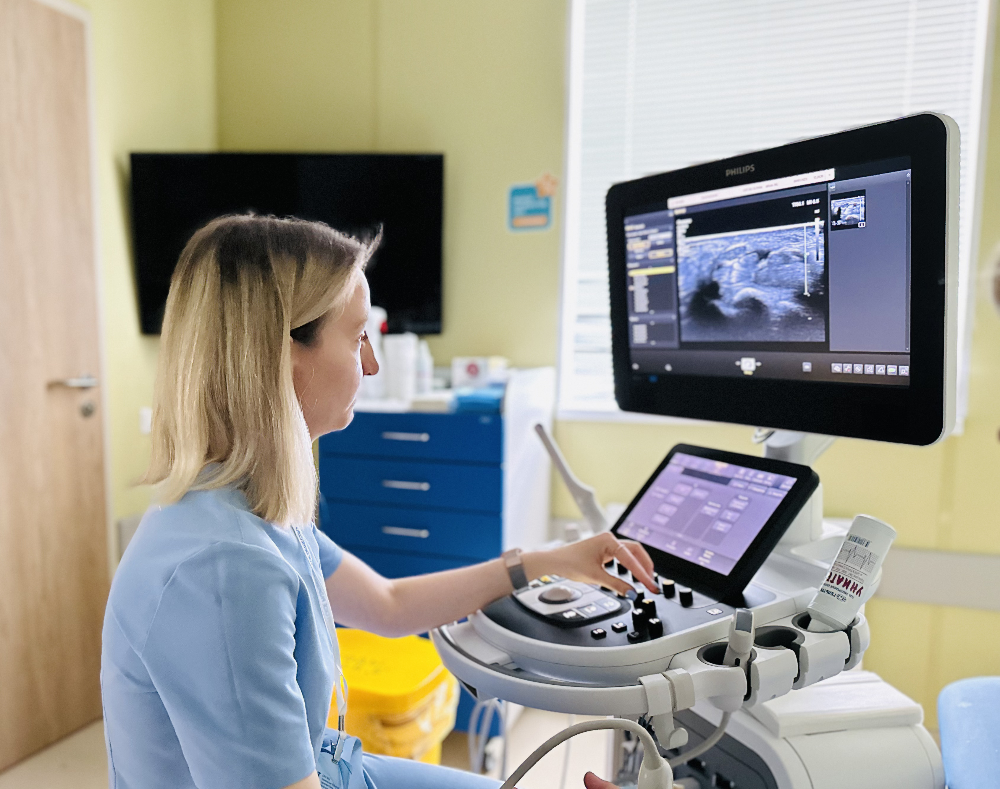
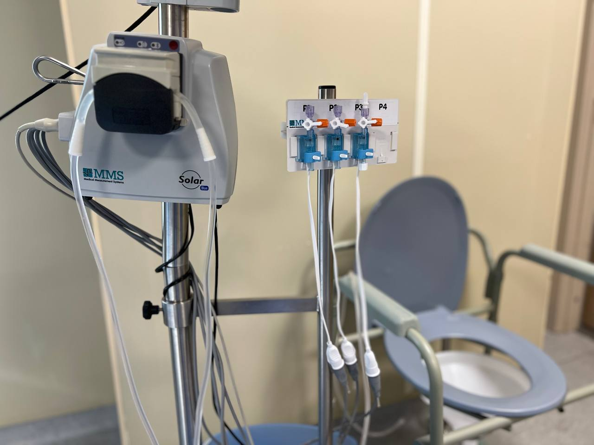
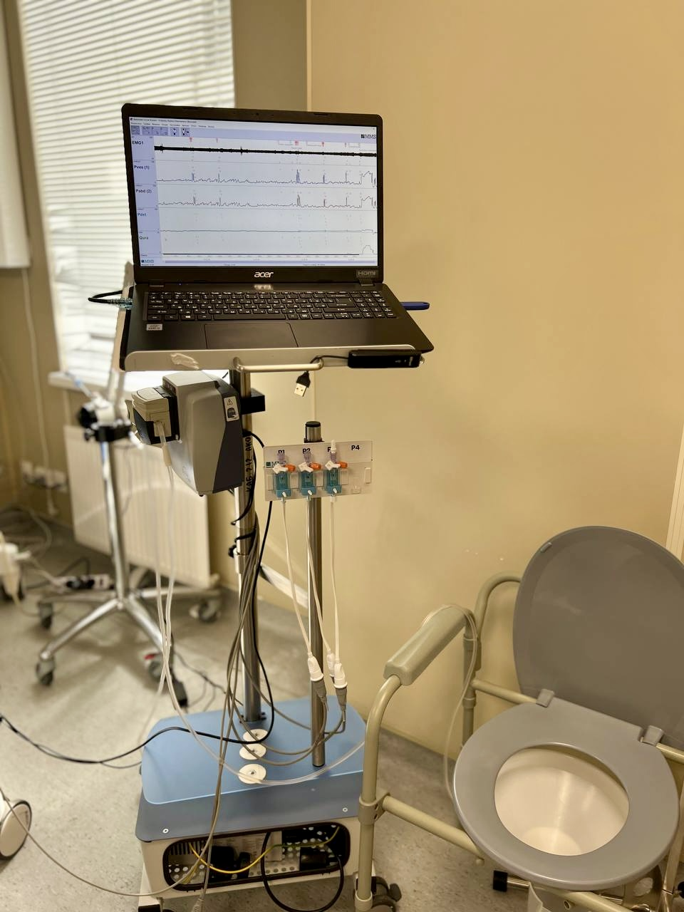
Что это?
Неинвазивное исследование, которое регистрирует объём мочи, скорость потока и форму кривой мочеиспускания.
Зачем проводится?
Помогает выявить признаки нарушения опорожнения мочевого пузыря и определить необходимость дальнейшего обследования.
Что оценивается?
Что это?
Одновременная регистрация давления в мочевом пузыре и скорости потока мочи помогает различить обструкцию и снижение сократительной способности детрузора.
Когда применяется?
При сложных нарушениях мочеиспускания, нейрогенной дисфункции, недержании мочи, задержке мочи и перед отдельными реконструктивными или функциональными вмешательствами.
Возможные проявления
Диагностика
Дневник мочеиспусканий, анализы мочи, УЗИ, определение остаточной мочи и уродинамические исследования по показаниям.
Что оценивается?
Причиной могут быть анатомическая обструкция, снижение сократительной способности мочевого пузыря, неврологические нарушения или сочетание факторов.
Диагностика
Урофлоуметрия, остаточная моча, эндоскопические исследования и исследование «давление–поток» по показаниям.
При каких состояниях может встречаться?
При заболеваниях и повреждениях головного или спинного мозга, периферических нервов и других неврологических состояниях.
Задачи лечения
Почему это важно?
При некоторых нейрогенных нарушениях повышенное давление в мочевом пузыре может неблагоприятно влиять на мочеточники и почки.
Что может включать наблюдение?
УЗИ, оценку функции почек, остаточной мочи и уродинамические исследования в объёме, определённом врачом.
Что может включать?
Когда применяется?
При невозможности полноценно опорожнять мочевой пузырь и при отдельных вариантах нейрогенной дисфункции.
Цель
Обеспечить регулярное опорожнение мочевого пузыря и снизить риск осложнений, связанных с хронической задержкой мочи.
Что это?
Эндоскопическое введение препарата в стенку мочевого пузыря с целью уменьшения патологических сокращений детрузора.
Когда рассматривается?
При отдельных формах гиперактивного и нейрогенного мочевого пузыря, когда стандартная медикаментозная терапия недостаточно эффективна или плохо переносится.
Особенности
Эффект ограничен по времени и может требовать повторного лечения. У некоторых пациентов после процедуры может увеличиваться остаточная моча.
Что это?
При устойчивых функциональных нарушениях могут рассматриваться методы нейромодуляции и реконструктивной хирургии.
Особенности
Показания определяются после комплексной оценки функции нижних и верхних мочевых путей.
Для функциональных и нейрогенных нарушений особенно важно учитывать:
Оптимальный план обследования и лечения врач определит после консультации и оценки медицинской документации.
Приоритетное направление
В Клинической больнице Святителя Луки робот-ассистированные урологические операции выполняются на системе da Vinci Xi. Технология применяется в онкоурологии, реконструктивной урологии и хирургическом лечении отдельных доброкачественных заболеваний.

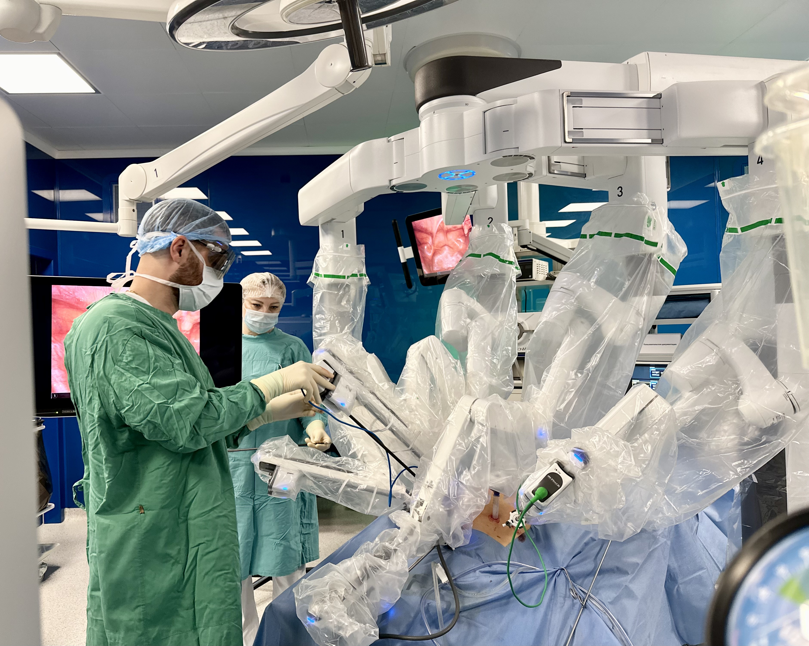
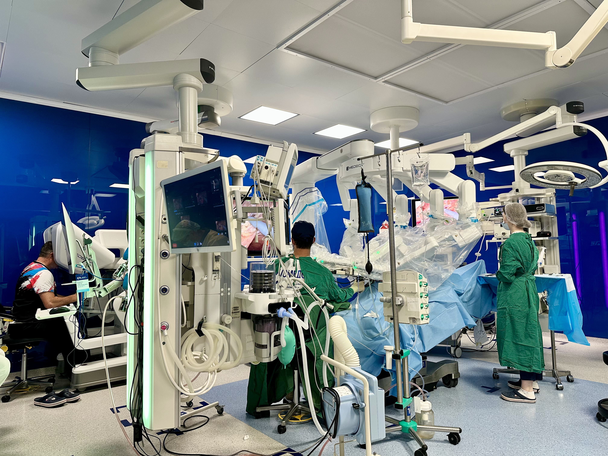
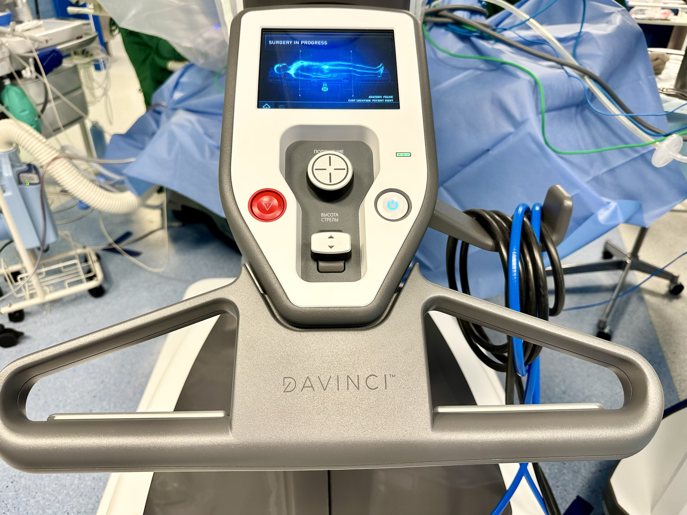
Центр роботической хирургии работает в Клинической больнице Святителя Луки с 2021 года. Здесь выполняются высокотехнологичные робот-ассистированные операции при урологических и онкоурологических заболеваниях.
Для робот-ассистированных вмешательств используется хирургическая система da Vinci Xi.
Онкоурология Реконструктивная урология Доброкачественные заболевания Малоинвазивный доступda Vinci Xi — роботическая хирургическая система, с помощью которой хирург выполняет операцию через несколько небольших доступов. Врач работает за консолью, получает увеличенное трёхмерное изображение операционного поля и управляет роботическими инструментами в режиме реального времени.
Робот не принимает решений и не выполняет операцию самостоятельно. Все движения инструментов и все этапы вмешательства контролирует хирург.
Зачем используется роботическая технология? Она особенно полезна при операциях, требующих точной диссекции, работы в ограниченном анатомическом пространстве и сложных реконструктивных этапов с наложением швов.Увеличенная 3D-визуализация
Детальное объёмное изображение операционного поля помогает работать рядом с важными анатомическими структурами.
Подвижные инструменты
Роботические инструменты позволяют выполнять сложные движения в ограниченном пространстве.
Фильтрация тремора
Система сглаживает мелкие непроизвольные движения рук хирурга.
Точное наложение швов
Технология удобна при реконструкции мочеточника, мочевого пузыря и других сложных восстановительных этапах.
Небольшие разрезы
Большинство операций выполняется через несколько небольших хирургических доступов.
Органосохраняющая хирургия
При наличии показаний роботическая технология может использоваться для операций, направленных на сохранение органа и его функции.
Тип и объём операции определяются диагнозом, стадией заболевания, анатомией и результатами обследования.
Робот-ассистированная радикальная простатэктомия
Удаление предстательной железы при раке предстательной железы. По показаниям операция может включать лимфаденэктомию и нервосберегающую технику.
Робот-ассистированная аденомэктомия
Хирургическое лечение крупных и очень крупных аденом предстательной железы с использованием роботической системы.
Робот-ассистированная резекция почки
Удаление опухоли с сохранением максимально возможного объёма функционирующей ткани почки, когда органосохраняющий подход технически и онкологически обоснован.
Робот-ассистированная радикальная нефрэктомия
Удаление почки вместе с опухолью при соответствующих показаниях.
Робот-ассистированная радикальная цистэктомия
Удаление мочевого пузыря при соответствующих онкологических показаниях. Операция может включать формирование способа отведения мочи, в том числе резервуара.
Аугментация мочевого пузыря
Реконструктивное увеличение ёмкости мочевого пузыря в отдельных клинических ситуациях.
Роботическая YV-пластика
Реконструктивная операция при склерозе шейки мочевого пузыря, внедрённая специалистами Центра в хирургическую практику.
Реконструкция при стриктурах мочеточника
Робот-ассистированные реконструктивные операции выполняются при стриктурах мочеточника различной локализации и протяжённости, в том числе при рецидивных сужениях.
Цель лечения
Восстановить нормальный отток мочи, сохранить функцию почки и, когда возможно, восстановить естественную анатомию мочевых путей.
Консультация Оценка диагноза, результатов обследования и показаний к роботическому доступу.
Подготовка Предоперационные анализы, обследования и консультация анестезиолога.
Общая анестезия Роботические операции выполняются под общей анестезией.
Небольшие доступы Через небольшие разрезы устанавливаются камера и роботические инструменты.
Работа хирурга Хирург находится за консолью и полностью контролирует каждое движение системы da Vinci Xi.
Восстановление После операции пациент находится под наблюдением профильной хирургической команды.
Роботическая операция подходит не каждому пациенту и не является автоматическим выбором только потому, что в клинике имеется роботическая система.
Решение принимается с учётом заболевания, стадии, размера и расположения образования, необходимости реконструкции, ранее выполненных операций, анатомических особенностей и общего состояния пациента.
В зависимости от клинической ситуации врач может рекомендовать:
работает Центр роботической хирургии КБ Святителя Луки
система для выполнения робот-ассистированных операций
для жителей Санкт-Петербурга роботические операции могут выполняться по квотам при наличии показаний и отсутствии противопоказаний
Нет. Хирург полностью управляет системой. Робот не принимает самостоятельных решений и не выполняет движения без действий врача.
Да. Для большинства робот-ассистированных операций используются несколько небольших хирургических доступов, через которые вводятся камера и инструменты.
Нет. Помимо онкоурологии, технология используется для сложных реконструктивных операций и отдельных доброкачественных заболеваний.
Окончательный доступ выбирается после обследования. Врач оценивает, даст ли роботическая технология преимущества в конкретной клинической ситуации.
Оптимальный вариант лечения врач определит после консультации и оценки результатов обследования.
Приоритетное направление
Малоинвазивное лечение доброкачественной гиперплазии предстательной железы с использованием энергии водяного пара — без наружных разрезов и с минимальным воздействием на сексуальную функцию.
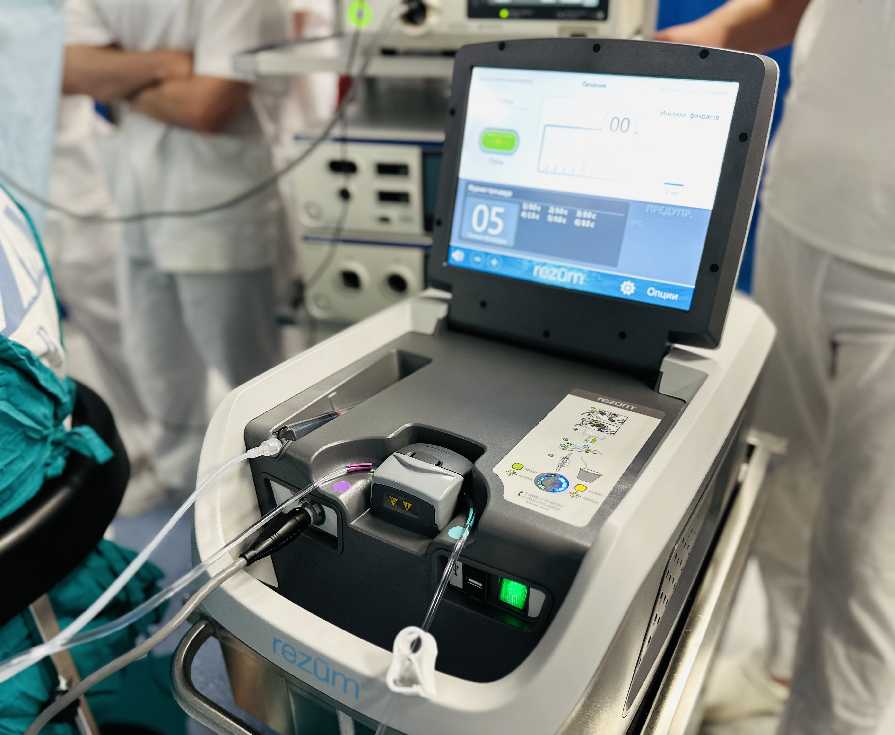
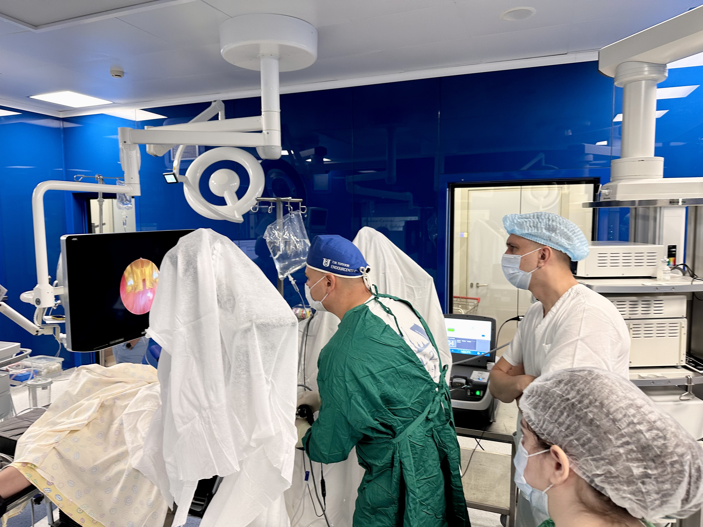
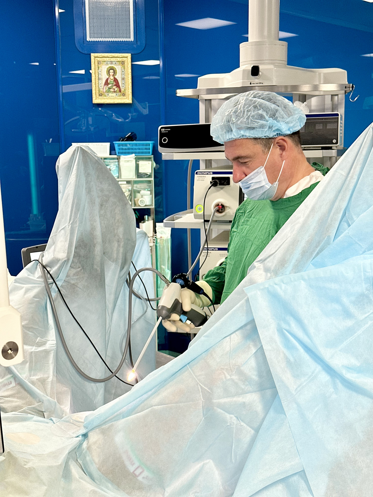
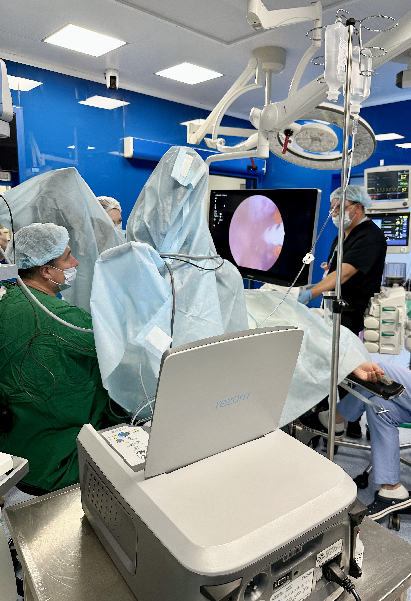
«Rezum» — малоинвазивная технология лечения симптомов, связанных с доброкачественным увеличением предстательной железы. Через мочеиспускательный канал к ткани простаты подводится контролируемая энергия водяного пара.
При контакте с тканью пар конденсируется и передаёт тепловую энергию в выбранную зону. В дальнейшем обработанная ткань постепенно уменьшается в объёме, благодаря чему просвет простатического отдела уретры расширяется и мочеиспускание улучшается.
Без наружных разрезов Малоинвазивно Постепенное уменьшение ткани Сохранение сексуальной функции — важная цель методаРешение принимается после обследования и оценки размера и анатомии предстательной железы.
Основные ситуации
Перед процедурой оцениваем
Доступ без разрезов Инструмент проводится через мочеиспускательный канал.
Подача пара В выбранные участки увеличенной ткани подаётся контролируемая доза водяного пара.
Воздействие на ткань Тепловая энергия вызывает локальное повреждение клеток в зоне лечения.
Постепенный эффект Организм постепенно удаляет обработанную ткань, а просвет уретры увеличивается.
Без наружных разрезов
Вмешательство выполняется через естественные мочевые пути.
Минимальная хирургическая травма
Не требуется удаление ткани классическим хирургическим способом.
Сексуальная функция
Метод разработан с целью уменьшения влияния лечения на эректильную и эякуляторную функцию.
Короткое вмешательство
Количество воздействий определяется анатомией и объёмом ткани предстательной железы.
Постепенное улучшение
Эффект формируется по мере уменьшения объёма обработанной ткани.
Индивидуальная тактика
Процедура планируется с учётом строения предстательной железы, включая среднюю долю при наличии показаний.
1. Консультация
Оценка жалоб, результатов обследования и показаний к процедуре.
2. Подготовка
Необходимые анализы и обследования, выбор анестезиологического сопровождения.
3. Процедура «Rezum»
Воздействие водяным паром выполняется через мочеиспускательный канал без кожных разрезов.
4. Катетер
После процедуры в ряде случаев временно устанавливается мочевой катетер.
5. Восстановление
В первые дни симптомы могут временно усиливаться. Улучшение мочеиспускания развивается постепенно.
6. Контроль
После лечения проводится наблюдение с оценкой симптомов и результатов мочеиспускания.
Нормальный восстановительный период
Когда ждать результат?
«Rezum» не удаляет ткань мгновенно. Обработанная ткань уменьшается постепенно, поэтому улучшение симптомов формируется со временем.
Сроки восстановления и выраженность эффекта индивидуальны.
Малоинвазивность сама по себе не означает, что метод является оптимальным для любой аденомы предстательной железы. Перед лечением необходимо оценить объём железы, её анатомию, выраженность обструкции, состояние мочевого пузыря и цели пациента.
Если для конкретной ситуации более подходящим является другой метод — лазерная энуклеация, ТУР, лапароскопическая или роботическая аденомэктомия, эмболизация артерий предстательной железы — врач обсудит альтернативы на консультации.
Да. Инструмент проводится через мочеиспускательный канал, поэтому наружные хирургические разрезы не требуются.
Одно из важных преимуществ водопаровой терапии — сравнительно низкий риск нарушения эякуляторной функции. Однако индивидуальный результат нельзя гарантировать и он обсуждается с врачом до лечения.
Временная катетеризация может потребоваться. Необходимость и длительность зависят от исходного мочеиспускания, объёма простаты и особенностей проведённого лечения.
После воздействия водяного пара обработанная ткань должна постепенно уменьшиться в объёме. Поэтому результат развивается поэтапно, а не непосредственно в момент процедуры.
Размер простаты — только один из факторов выбора. Возможность применения метода определяется индивидуально с учётом объёма, анатомии, выраженности обструкции и альтернативных вариантов лечения.
Оптимальный вариант лечения врач определит после консультации и оценки результатов обследования.